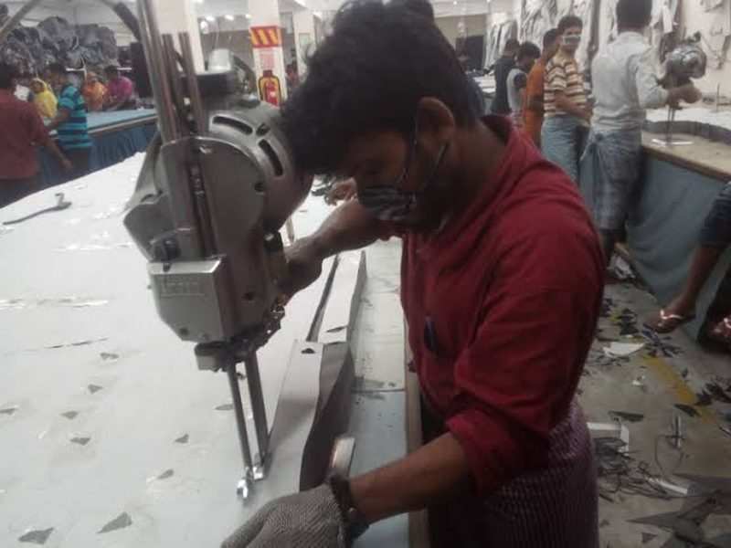

ZIABRIDGE
Quality You Can Trust. Global Solutions You Can Rely On.

Cutting turns fabric rolls into the actual garment panels that get sewn together. A mistake made here — a warped panel, a mismatched shade, a missing notch — can't really be fixed later; it just becomes a sewing-line defect or a rejected garment. Good cutting quality is what makes every later step possible.
Before bulk cutting starts, fabric is normally left to relax for a period (commonly 24–48 hours for knits) so it settles into its true shape instead of shrinking or stretching after the garment is already cut.
The marker is the layout plan showing exactly how pattern pieces fit onto the fabric width. It's checked for correct grainline direction, correct pattern sizes, and efficient use of fabric before a single layer is cut.
Fabric is layered (spread) in multiple plies before cutting. Inspectors check that ply tension is even (not too tight or too loose), the ply count matches the order plan, and all plies face the correct direction — especially for napped or one-way print fabrics.
After cutting, panels are checked against the pattern for accuracy, and bundled by size. Bundling also groups panels from the same shade/dye lot together, so a finished garment doesn't end up with mismatched-shade parts.
Pattern pieces are laid out and traced onto marker paper by hand. Slower and best suited to small production runs or one-off samples.
CAD software (like Gerber, Lectra, or Optitex) arranges the pieces digitally. Faster, more consistent, and generally wastes less fabric than manual layout.
A computerized method where the software arranges pattern pieces on its own, with no manual placement — fastest, though not always the most fabric-efficient layout.
A computerized method where an operator manually drags and arranges each piece on screen — slower than automatic, but usually achieves higher marker efficiency (less wasted fabric).
Combines pattern pieces from more than one size or style into a single marker layout, to use fabric width more efficiently.
All pattern pieces face the same direction — required for napped, pile, or one-directional print fabrics where flipping a piece would look wrong.
"Marker efficiency" — how much of the fabric width is actually used by pattern pieces versus wasted as scrap — is the single number that most affects fabric cost on a large order.
Most of these problems trace back to either a rushed marker review or fabric that wasn't given enough time to relax before cutting — both are easy to prevent with the right checkpoints in place.